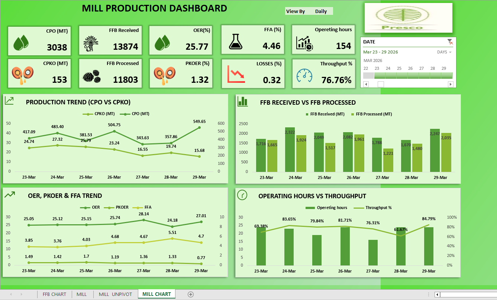
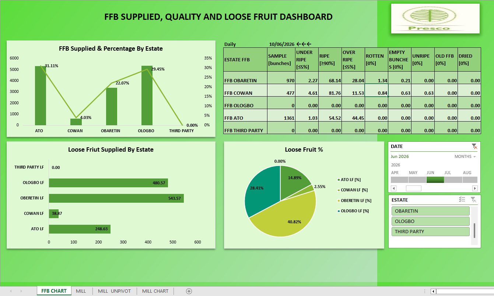

Production dashboards
Live dashboards in daily use
Connected directly to the production server and used every day by management, executives, supervisors, QC and logistics.

Production analytics
Refinery Production Dashboard
Throughput, yield, downtime and quality (including DOBI) for the refinery and fractionation, by shift, day, week and month.
Result: weekly, monthly and quarterly reports went from hours to seconds.
Case study
Production analytics
Mill Production Dashboard
FFB intake and processing, CPO and CPKO output, extraction rates (OER, PKOER), FFA and losses.
Result: surfaced a real gap between FFB received and FFB processed.
Case study
Supply chain & quality
FFB Supply Chain & Quality Dashboard
Fruit supply and ripeness grading per estate and supplier, against quality standards.
Result: flagged an over-ripe rate running 6 to 9 times the standard.
Case study
Inventory analytics
Tankfarm Stock Volume Dashboard
Tank-by-tank stock for mill and refinery products, used for dispatch planning and reconciliation.
Result: overflow and stock-out risks are visible at a glance.
Case study